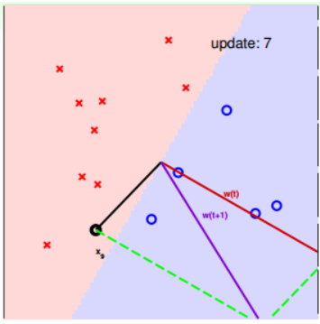
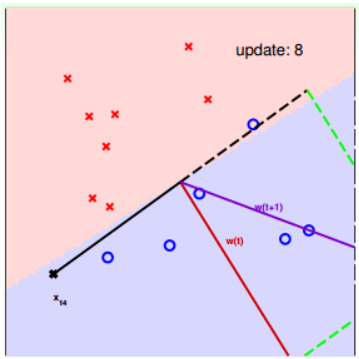

上節課，主要簡述了機器學習的定義及其重要性，並用流程圖的形式介紹了機器學習的整個過程：
根據 模型H ，使用 演算法A ，在 訓練樣本D 上進行訓練，得到最好的 h ，其對應的 模型函數g 式機器學習中最重要的，一般 g 接近於 目標函數f 。
本節課將繼續深入探討機器學習問題，介紹 感知機Perceptron 模型，並推導課程的第一個機器學習演算法： Perceptron Learning Algorithm（PLA） 。
# Perceptron Hypothesis Set
引入這樣一個例子：某銀行要根據使用者的年齡、性別、年收入等情況來判斷是否給該用戶發信用卡。現在有訓練樣本 D，即之前使用者的資訊和是否發了信用卡。這是一個典型的機器學習問題，我們要根據 D ，通過 A ，在 H 中選擇最好的 h ，得到函數運算式 g ，接近目標函數 f ，也就是根據先驗知識建立是否給使用者發信用卡的模型。銀行用這個模型對以後使用者進行判斷：發信用卡（+1），不發信用卡（-1）。
在這個機器學習的整個流程中，有一個部分非常重要：就是模型選擇，即 Hypothesis Set 。選擇什麼樣的模型，很大程度上會影響機器學習的效果和表現。下面介紹一個簡單常用的 Hypothesis Set ：感知機 Perceptron 。
還是剛才銀行是否給用戶發信用卡的例子，我們把使用者的個人資訊作為 特徵向量x ，令總共有 d個特徵 ，每個特徵賦予不同的 權重w ，表示該特徵對輸出（是否發信用卡）的影響有多大。那所有特徵的加權和的值與一個設定的 閾值threshold 進行比較：大於這個閾值，輸出為 + 1，即發信用卡；小於這個閾值，輸出為 - 1，即不發信用卡。感知機模型，就是當特徵加權和與閾值的差大於或等於 0，則輸出；當特徵加權和與閾值的差小於 0，則輸出，而我們的目的就是計算出所有 權值w 和 閾值threshold 。
為了計算方便，通常我們將 閾值threshold 當做，引入一個 的量與 相乘，這樣就把 threshold 也轉變成了權值，簡化了計算。 的運算式做如下變換：
假設 Perceptrons 在二維平面上，即。其中， 是平面上一條分類直線，直線一側是正類 (+1)，直線另一側是負類 (-1)。 權重w 不同，對應於平面上不同的直線。
那麼，我們所說的 Perceptron ，在這個模型上就是一條直線，稱之為 linear(binary) classifiers 。注意一下，感知器線性分類不限定在二維空間中，在 3D 中，線性分類用平面表示，在更高維度中，線性分類用超平面表示，即只要是形如 的線性模型就都屬於 linear(binary) classifiers 。
# Perceptron Learning Algorithm(PLA)
根據上一部分的介紹，我們已經知道了 hypothesis set 由許多條直線構成。接下來，我們的目的就是如何設計一個 演算法A ，來選擇一個最好的直線，能將平面上所有的正類和負類完全分開，也就是找到最好的 g，使
如何找到這樣一條最好的直線呢？我們可以使用逐點修正的思想，首先在平面上隨意取一條直線，看看哪些點分類錯誤。然後開始對第一個錯誤點就行修正，即變換直線的位置，使這個錯誤點變成分類正確的點。接著，再對第二個、第三個等所有的錯誤分類點就行直線糾正，直到所有的點都完全分類正確了，就得到了最好的直線。這種逐步修正的作法，就是 PLA 思想所在。

下面介紹一下 PLA 是怎麼做的。首先隨機選擇一條直線進行分類。然後找到第一個分類錯誤的點，如果這個點表示正類，被誤分為負類，即，那表示 和 夾角大於 90 度，其中 w 是直線的法向量。所以， 被誤分在直線的下側（相對于法向量，法向量的方向即為正類所在的一側），修正的方法就是使 和 夾角小於 90 度。通常做法是，如圖右上角所示，一次或多次更新後的 與 夾角小於 90 度，能保證 位於直線的上側，則對誤分為負類的錯誤點完成了直線修正。
同理，如果是誤分為正類的點，即，那表示 和 夾角小於 90 度，其中 是直線的法向量。所以， 被誤分在直線的上側，修正的方法就是使 和 夾角大於 90 度。通常做法是，如圖右下角所示，一次或多次更新後的 與 夾角大於 90 度，能保證 x 位於直線的下側，則對誤分為正類的錯誤點也完成了直線修正。
按照這種思想，遇到個錯誤點就進行修正，不斷反覆運算。要注意一點：每次修正直線，可能使之前分類正確的點變成錯誤點，這是可能發生的。但是沒關係，不斷反覆運算，不斷修正，最終會將所有點完全正確分類（PLA 前提是線性可分的）。這種做法的思想是知錯能改，有句話形容它： A fault confessed is half redressed.
實際操作中，可以一個點一個點地遍歷，發現分類錯誤的點就進行修正，直到所有點全部分類正確。這種被稱為 Cyclic PLA 。
PLA 的修正過程如下:


對 PLA，我們需要考慮以下兩個問題：
- PLA 反覆運算一定會停下來嗎？如果線性不可分怎麼辦？
- PLA 停下來的時候，是否能保證？如果沒有停下來，是否有？
# Guarantee of PLA
PLA 什麼時候會停下來呢？根據 PLA 的定義，當找到一條直線，能將所有平面上的點都分類正確，那麼 PLA 就停止了。要達到這個終止條件，就必須保證 D 是線性可分（linear separable）。如果是非線性可分的，那麼，PLA 就不會停止。
對於線性可分的情況，如果有這樣一條直線，能夠將正類和負類完全分開，令這時候的目標權重為，則對每個點，必然滿足，即對任一點：
PLA 會對每次錯誤的點進行修正，更新權重 的值，如果 與 越來越接近，數學運算上就是內積越大，那表示 是在接近目標權重，證明 PLA 是有學習效果的。所以，我們來計算 與 的內積：
從推導可以看出， 與 的內積跟 與 的內積相比更大了。似乎說明了 更接近，但是內積更大，可能是向量長度更大了，不一定是向量間角度更小。所以，下一步，我們還需要證明 與 向量長度的關係：
只會在分類錯誤的情況下更新，最終得到的 相比 的增量值不超過。也就是說， 的增長被限制了， 與 向量長度不會差別太大！
如果令初始權值，那麼經過 次錯誤修正後，有如下結論：
上述不等式左邊其實是 與 夾角的餘弦值，隨著 T 增大，該餘弦值越來越接近 1，即 與 越來越接近。同時，需要注意的是，，也就是說，反覆運算次數 T 是有上界的。根據以上證明，我們最終得到的結論是： 與 的是隨著反覆運算次數增加，逐漸接近的。而且，PLA 最終會停下來（因為 有上界），實現對線性可分的資料集完全分類。
# Non-Separable Data
上一部分，我們證明了線性可分的情況下，PLA 是可以停下來並正確分類的，但對於非線性可分的情況， 實際上並不存在，那麼之前的推導並不成立，PLA 不一定會停下來。所以，PLA 雖然實現簡單，但也有缺點：
對於非線性可分的情況，我們可以把它當成是資料集 D 中摻雜了一下 noise，事實上，大多數情況下我們遇到的 D，都或多或少地摻雜了 noise。這時，機器學習流程是這樣的：

在非線性情況下，我們可以把條件放鬆，即不苛求每個點都分類正確，而是容忍有錯誤點，取錯誤點的個數最少時的 權重w ：
事實證明，上面的解是 NP-hard 問題，難以求解。然而，我們可以對在線性可分類型中表現很好的 PLA 做個修改，把它應用到非線性可分類型中，獲得近似最好的 g。
修改後的 PLA 稱為 Packet Algorithm 。它的演算法流程與 PLA 基本類似，首先初始化權重，計算出在這條初始化的直線中，分類錯誤點的個數。然後對錯誤點進行修正，更新 w，得到一條新的直線，在計算其對應的分類錯誤的點的個數，並與之前錯誤點個數比較，取個數較小的直線作為我們當前選擇的分類直線。之後，再經過 n 次反覆運算，不斷比較當前分類錯誤點個數與之前最少的錯誤點個數比較，選擇最小的值保存。直到反覆運算次數完成後，選取個數最少的直線對應的 w，即為我們最終想要得到的權重值。
如何判斷資料集 D 是不是線性可分？對於二維資料來說，通常還是通過肉眼觀察來判斷的。一般情況下， Pocket Algorithm 要比 PLA 速度慢一些。
# Conclusion
本節課主要介紹了線性感知機模型，以及解決這類感知機分類問題的簡單演算法：PLA。我們詳細證明了對於線性可分問題，PLA 可以停下來並實現完全正確分類。對於不是線性可分的問題，可以使用 PLA 的修正演算法 Pocket Algorithm 來解決。